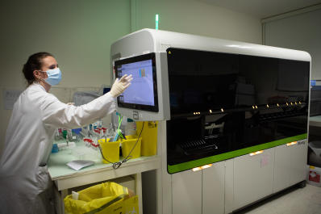

Conquête spatiale, supercalculateur... la Chine, un géant scientifique lancé à pleine vitesse
« L’empire du Milieu accélère » (2/5). Xi Jinping a fait de la réussite des projets scientifiques et technologiques un marqueur essentiel du succès du modèle politique chinois.

Comment le géant du diagnostic médical Abbott a inondé le marché de machines défectueuses
A partir de 2017, l’entreprise américaine, qui figure parmi les quatre leaders mondiaux du diagnostic in vitro, a commercialisé auprès des laboratoires privés et hospitaliers un nouveau modèle d’automate, Alinity, dont elle connaissait les vulnérabilités.
Fragilisée par l’affaire Olivier Duhamel, Elisabeth Guigou démissionne de la commission sur l’inceste
La légitimité de l’ancienne garde des sceaux à la tête de cette nouvelle commission était en question en raison de sa proximité avec le politiste Olivier Duhamel, accusé d’inceste sur son beau-fils.